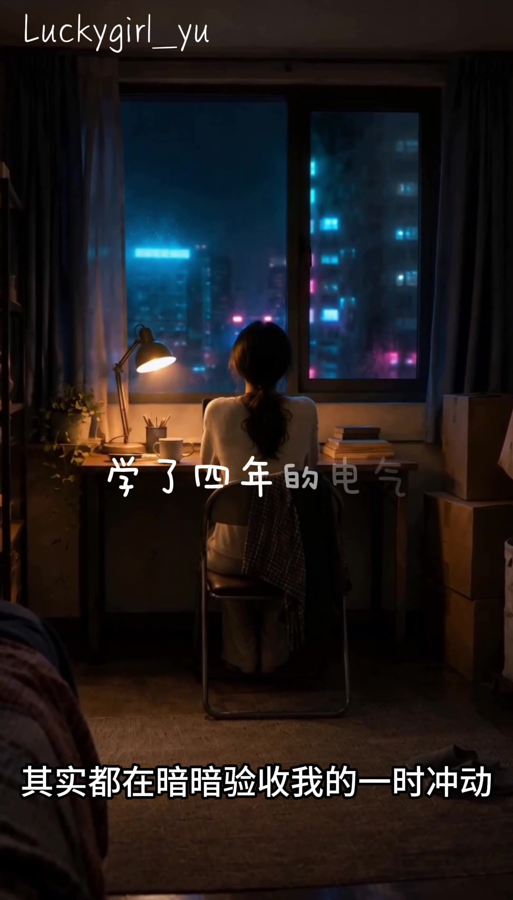
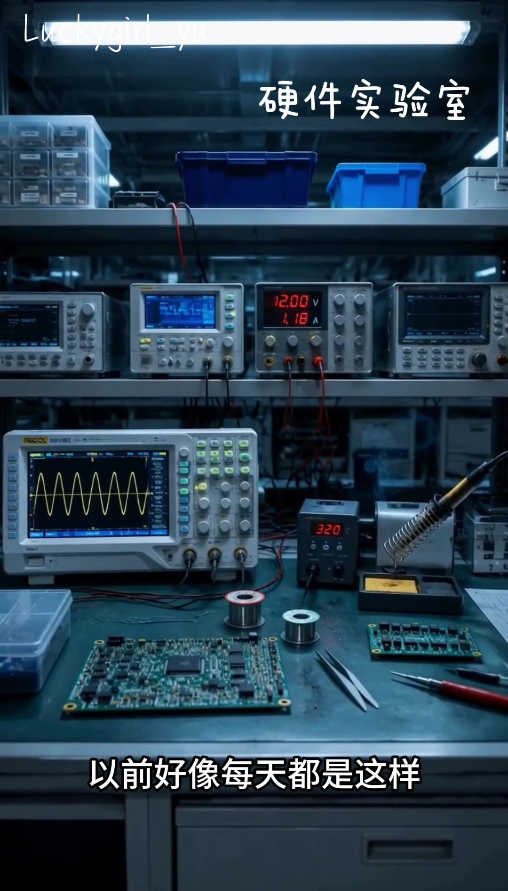
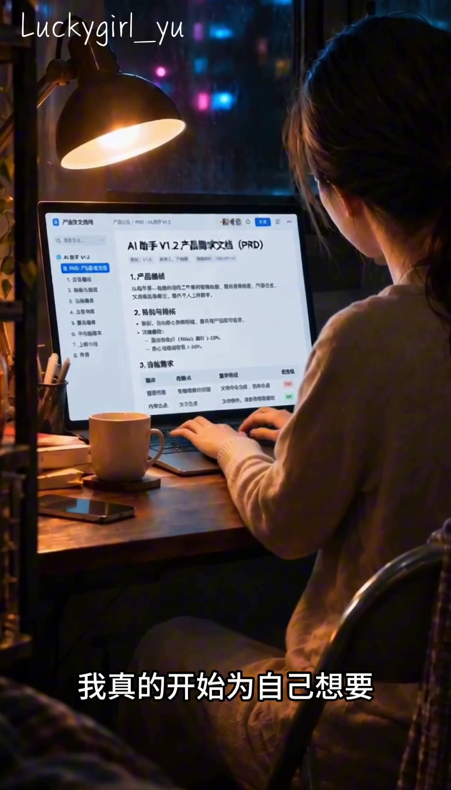

03 / THE STORY
从停在原地，到重新开始
灵感来自我职业转型时的真实经历。我想记录的是离开熟悉的轨道之后，怎么面对怀疑，重新为自己想要的生活做事。

SCENE 01≈ 00:18 01 / THE QUESTION
被问近况
裸辞第225天，一条关于工作进展的消息，让原本平静的情绪再次泛起波澜。
SCENE 02≈ 00:30 02 / THE COMPARISON
别人的轨道
看到身边的人旅行、深造，似乎都有了自己的方向，而自己好像还停留在原地。

SCENE 03≈ 00:44 03 / THE REFLECTION
重新审视自己
回望过去重复的硬件实验室工作，开始思考自己真正想要的生活。

SCENE 04≈ 01:20 04 / THE ACTION
重新开始
从反复怀疑走向主动行动，开始为自己想要的生活做事。